|
MANÓMETROS DE CONTACTO ELECTRÓNICO
|
- Abren o cierran circuitos en función de la posición de la aguja
- Diámetro: 4"
- Disponibles en INOX-BCE o TOT-INOX
- Precisión: ±1% y ±1.6% de la escala total
- Conexión inferior −1/2" NPT
- Potencia: 10 y 30 Watts
- Rangos: desde −30" Hg hasta 600 psi/bar
|
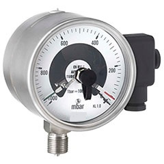
|
|
MANÓMETROS DIFERENCIALES
|
- Determinan la presión absoluta, el vacío o la presión diferencial
- Diámetros: 4"
- Secos (sin glicerina)
- Disponibles en AC NEG-BCE y TOT-INOX
- Precisión: ±1.6% en la escala total
- Conexión inferior −1/2" NPT
- Rangos: desde 60 hasta 300 psi/bar
|
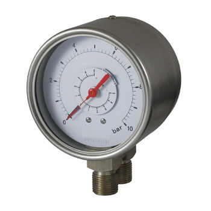
|
| MANÓMETROS DE ACERO INOXIDABLE |
- Disponibles: Manómetros, vacuómetros y manovacuómetros
- Diámetros: 2½", 4" y 6"
- Rellenables con glicerina
- Caja y mecanismo de acero inoxidable
- Precisión: 2 ½" = ±1.6% , 4" y 6" = ±1%
- Conexiones inferior y posterior
- Conexión: 1/4" y 1/2" NPT
- Rangos: desde −30" Hg hasta 15000 psi/bar
- Marcas: Itec
|
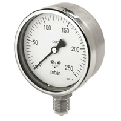
|
| MANÓMETROS DE BRONCE INOXIDABLE |
- Disponibles: Manómetros, vacuómetros y manovacuómetros
- Diámetros: 2½", 4", 6" y 8"
- Rellenables con glicerina
- Cierre tipo bayoneta
- Caja de acero inoxidable, mecanismo y rosca de bronce
- Precisión: ±1.6% en la escala total
- Conexiones inferior y posterior
- Conexión: 1/4" y 1/2" NPT
- Rangos: desde −30" Hg hasta 15000 psi/bar
- Marcas: Itec
|
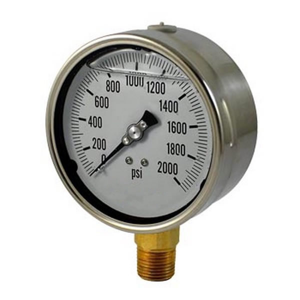 |
| MANÓMETROS PARA TABLERO |
- Para panel U-Clamp o panel Brida frontal
- Diámetros: 2" y 2½"
- Secos (sin glicerina)
- Disponibles en AC NEG-BCE e INOX-BCE
- Precisión: ±1.6% en la escala total
- Conexión inferior
- Conexión: 1/4" NPT
- Rangos: desde -30" hasta 1500 psi/bar
- Marcas: Itec
|
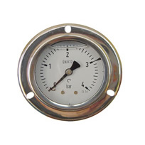 |
| MANÓMETROS ESTÁNDAR DE ACERO/BRONCE NEGRO |
- Disponibles: Manómetros, vacuómetros y manovacuómetros
- Diámetros: 1½", 2", 2½", 3½", 4", 4½", 6", 8" y 10"
- Secos (sin glicerina)
- Caja de acero negro, mecanismo y rosca de bronce
- Precisión: ± 1.6% en la escala total
- Conexiones: inferior y posterior
- Conexión: 1/8", 1/4" y 1/2" NPT
- Rangos: desde −30" Hg hasta 300 psi/bar
- Marcas: Reotemp, Itec, Weiss
|
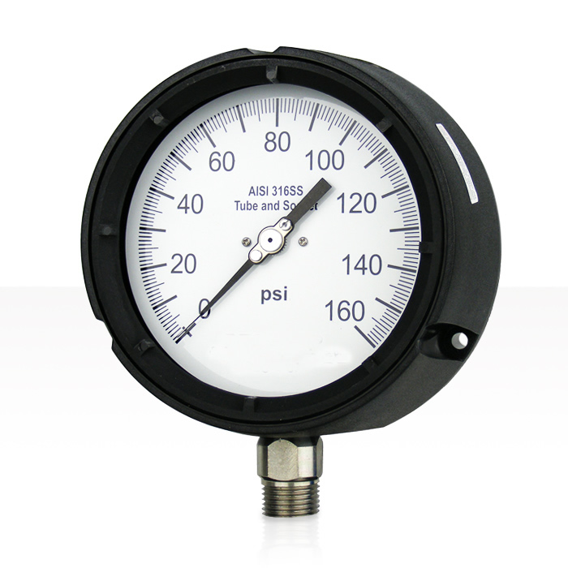 |
| MANOVACUÓMETRO PARA AMONIACO (NH3) |
- Para sistemas de refrigeración y otras aplicaciones con amoníaco (NH3)
- Diámetros: 2½" y 4"
- Secos (sin glicerina)
- Caja y mecanismo de acero inoxidable
- Precisión: ±1% y ±1.6% de la escala total
- Conexión inferior −1/4" y 1/2" NPT
- Material de contacto: acero inoxidable
- Rangos: desde −30 hasta 350 psi/NH3 / desde −1 hasta 24 bar/NH3
|
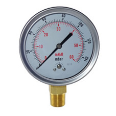 |
| MANÓMETROS PATRÓN |
- Permiten calibrar otros manómetros por su mayor precisión
- Diámetros: 6"
- Secos (sin glicerina)
- Caja y mecanismo de acero inoxidable
- Precisión: ±0.25% y ±0.5% de la escala total
- Conexión inferior −1/2" NPT
- Rangos: desde 30 hasta 1000 psi/bar
|
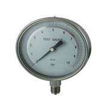 |
| MANÓMETROS DE SEGURIDAD FENOLICO INOXIDABLE |
- Disponibles: Manómetros, vacuómetros y manovacuómetros
- Diámetros: 4½"
- Rellenables con glicerina
- Caja de fenólico y mecanismo de acero inoxidable
- Precisión: ±0.5% y ±1% de la escala total
- Conexión inferior −1/2" NPT
- Aguja con ajuste micrométrico
- Rangos: desde −30" Hg hasta 3000 psi/bar
- Marcas: Reotemp
|
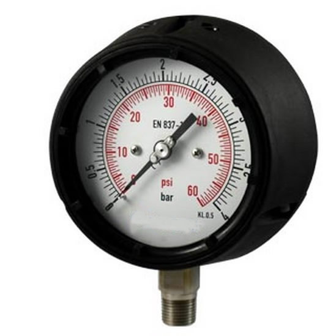 |
| MANÓMETROS PARA REFRIGERACIÓN |
- Diámetro 2½"
- Secos (sin glicerina)
- Caja de acero inoxidable, mecanismo y conexión de bronce
- Precisión: ±2.5% de la escala total
- Conexión inferior −1/4" NPT
- Rangos: −30+250 psi/bar / 0-500 psi/bar
|
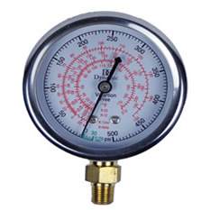 |
| MANÓMETROS PARA OXÍGENO - ACETILENO |
- Para oxígeno o acetileno
- Diámetro 2½"
- Secos (sin glicerina)
- Caja de acero negro, mecanismo y conexión de bronce
- Precisión: ±2.5% de la escala total
- Conexión inferior −1/4" NPT
- Rangos: desde 30 hasta 4000 psi/bar
|
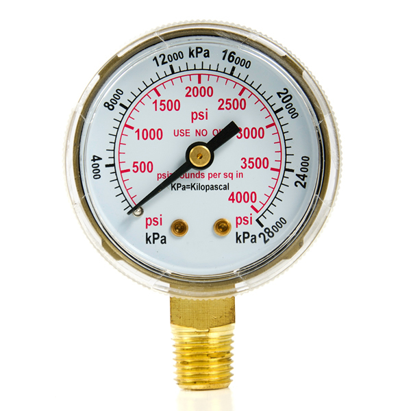 |
| MANÓMETROS PARA BAJA PRESIÓN |
- Disponibles: Manómetros, vacuómetros y manovacuómetros
- Diámetros: 2 ½" y 4"
- Secos (sin glicerina)
- Disponibles en AC NEG-BCE, INOX- BCE y TOT-INOX
- Precisión: ±1.6% y ±2.5% en la escala total
- Conexión inferior: −1/4" y 1/2" NPT
- Rangos: 0-3, 5, 10 psi/mbar / desde 10 hasta 280" H2O/mbar
|
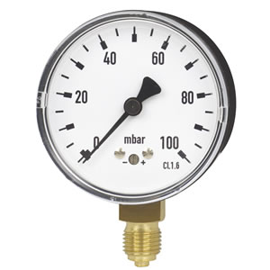 |
| ACCESORIOS PARA MANÓMETROS |
- Accesorios Para Manómetros
- Agujas ajustables
- Bushing (Bronce y acero inoxidable)
- Adaptadores (Bronce y acero inoxidable)
- Punzón pincha latas
- Jebe para pincha latas P/VM
- Tubo sifón
- Brida frontal de acero inoxidable
- Amortiguador tipo aguja
- Amortiguador con elemento poroso
- Sello de diafragma
|
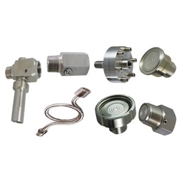 |